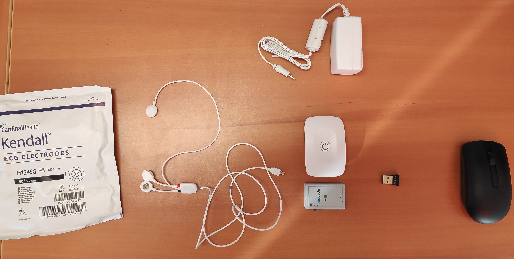
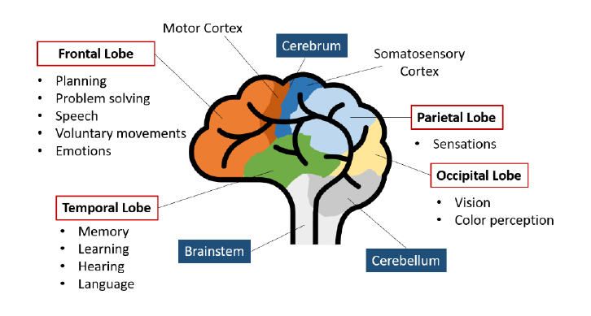
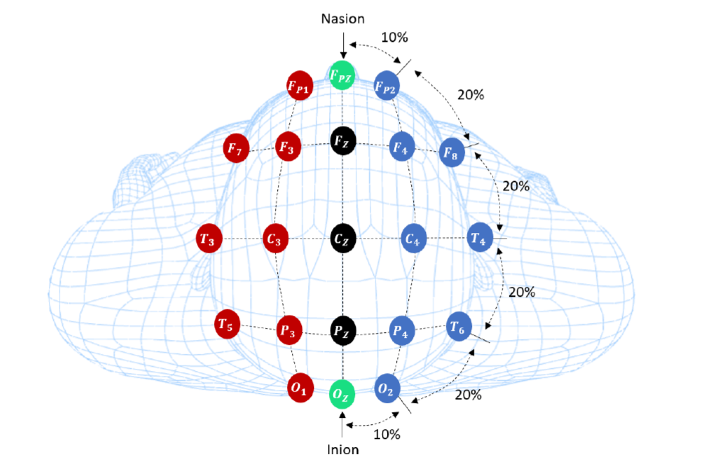
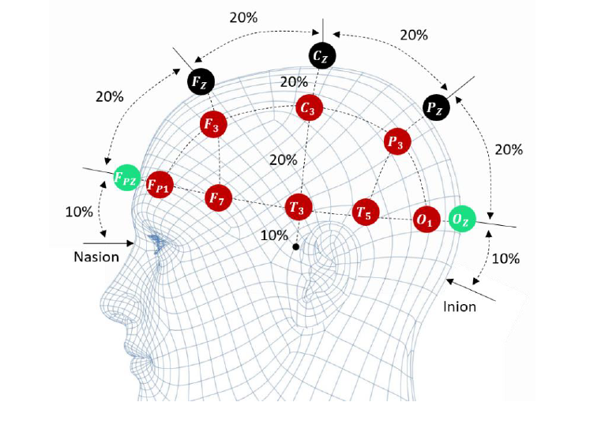
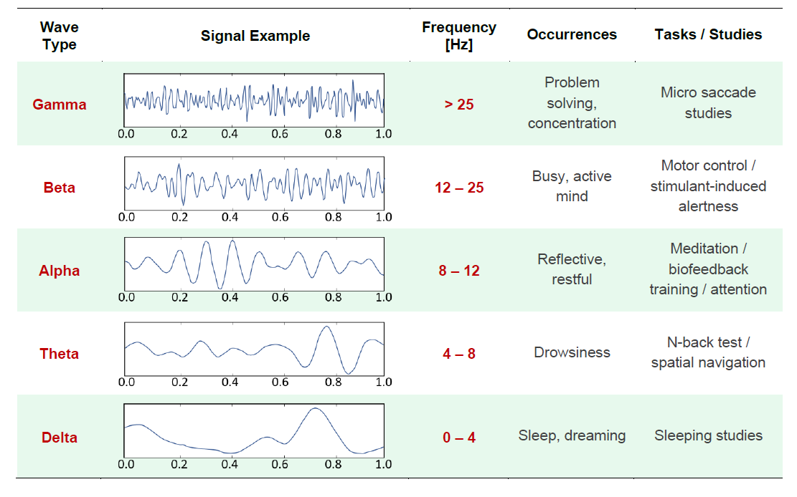

Capteurs
Variables étudiées en fonction des lobes
1 Herculano-Houzel, Suzana. "The human brain in numbers: a linearly scaled-up primate brain." Frontiers in human neuroscience 3 (2009): 31.
2 Farnsworth, B. "EEG (Electroencephalography): The Complete Pocket Guide." (2019).
3 Bansal, Dipali, and Rashima Mahajan. EEG-Based Brain-Computer Interfaces: Cognitive Analysis and Control Applications. Academic Press, 2019
Placement des electrodes "internationnal 10-20 system"
 4 Abhang, Priyanka A., Bharti W. Gawali, and Suresh C. Mehrotra.” Chapter 2 - Technological Basics of EEG Recording and Operation of Apparatus”, Introduction to EEG-and speech-based emotion recognition. Academic Press, p.19-50, 2016.
La mesure EEG
1 mesure = 2 electrodes + 1 electrode reférence
1 mesure = Différence de potentiel electrique entre 2 electrodes
5 ondes & fréquences associées
Considérations pratiques & recommandations
• Filtre passe bande 0.8-48Hz éliminant la plupart des signaux non voulus.
• Le gain(40000) fait que le capteur est sensible aux artefacts (lumière, mouvement, réseau electrique, magnétiques, etc.).
• Attention aux mouvements (tête, oeil, clignements, machoire).
• Intéret de combiner les capteurs pour enregistrer les artefacts (EOG, EMG, and ECG, vidéo annotées).
• Toujours mieux de préparer la peau, enlever les poils
Logiciel d'acquisition (OpenSignal)
Logiciel traitement (Spyder-Python)
# -*- coding: utf-8 -*-
"""
Created on Wed Nov 17 11:04:32 2021
@author: f.foc
"""
################################################## Modules (ne pas modifier...) ###############################
from tkinter.filedialog import askopenfilename #input dialog (fenetre interaction)
from pathlib import Path #travailler avec des chemins de fichiers/repertoires
import numpy # Travailler avec des "array" (matrices dans matlab)
from numpy import loadtxt, array, mean
import csv # Gestion des fichiers (lire, ouvrir, ecrire)
import os # Interface d'OS (fenetres, etc)
import matplotlib.pyplot as plt # Graphiques
from scipy.signal import spectrogram, welch # signal processing
import biosignalsnotebooks as bsnb # biosignalsnotebooks Python package
#import math # Fonctions mathématiques (si vous souhaitez) https://docs.python.org/3/library/math.html
################################################## FONCTIONS (ne pas modifier...) #############################
# Fonction ouvre une interface graphique et permet de selectionner un fichier, renvoie le nom et le chemin
def getfile():
filename = askopenfilename(initialdir = "",title = "Select file",filetypes = (("txt files","*.txt"),("all files","*.*")))
nomfichier = os.path.split(filename)[1]
return nomfichier, filename
# Fonction lit et parse un fichier csv et retourne les données formatées ainsi que la taille des colonnes et lignes
def lecturecsv(nomfichier,ligne):
datalist = []
dataarray = []
with open(nomfichier, 'r') as csvfile:
reader = csv.reader(csvfile, delimiter=';')
for rows in reader:
datalist.append(rows) #list de str
dataarray=numpy.array(datalist[ligne:]) #convert list en array
L_rows = len(dataarray) # calcul de longueur de vecteur
L_columns = len(dataarray[0])
return dataarray, L_rows, L_columns
############################################# SCRIPT (à modifier gentillement) ###################################
nomfichier, chemin=getfile() # Obtient chemin et nom du fichier grace à une fenetre graphique
path = Path(chemin) # formatte un str en chemin
os.chdir(path.parent.absolute()) # Met l'espace de travail dans le repertoire indiqué
data = loadtxt(nomfichier) # Récupère les données brutes
channel_column = 2
dataEEG = data[:,channel_column] # Récupère les données EEG (3ème colonne)
sampling_rate = 1000 # Défini la fréquence d'acquisition (ici 1000hz)
time = bsnb.generate_time(dataEEG, sampling_rate) # Génère un vecteur de temps (à utiliser en abscisse)
# Transforme le signal en microvolt (fonction de conversion donnée par PLUX)
# https://biosignalsplux.com/learn/notebooks/Categories/Pre-Process/unit_conversion_eeg_rev.php)
vcc = 3e6
gain = 40000
resolution = 16 # Resolution (number of available bits)
signal_uv = (((array(dataEEG) / 2**resolution) - 0.5) * vcc) / gain
# Trace un graphique (plot) le signal EEG (sans post-processing) en fonction du temps
plt.figure(1) # défini une figure
plt.plot(time, signal_uv, label='Uv') # trace le graphique
plt.xlabel('temps (s)') # défini un label en abcisse
plt.ylabel('raw data (uV)') # défini un label en ordonnée
plt.legend() # défini une légende
plt.title("Raw data EEG en microvolt") # défini un titre
plt.savefig('graph_raw_uV',dpi=500) # Sauvegarde la figure avec un nom de fichier et une résolution donnée
# Spectrogramme du signal EEG : info sur la dynamique du signal (puissance) au cours du temps pour chaque fréquence
#https://docs.scipy.org/doc/scipy/reference/generated/scipy.signal.spectrogram.html
f, t, Sxx = spectrogram(signal_uv, fs = 1000)
# Trace le spectrogramme graphique
plt.figure(2)
plt.pcolormesh(t, f, Sxx, shading='gouraud') # Tracé
plt.ylabel('Frequences [Hz]')
plt.xlabel('Temps [s]')
plt.ylim([0, 30]) #limiter l'ordonnée
plt.colorbar().set_label("Power (dB)") # Légende
plt.title("Spectrogram")
plt.savefig('spectrogram',dpi=500)
# Analyse temporelle
# Calcul d'une baseline et normalisation avec celle-ci sur une fenetre temporelle particulière
sample_start = 1000; # Choix du début
sample_end = 3000; # Choix de la fin
signal_analysed = array(signal_uv[sample_start:sample_end]) - mean(array(signal_uv[sample_start:sample_end])) # retrait et normalisation par la baseline
# Filtrer en appliquant un filtre Butterworth passe-bande (Exemple de la "alpha band")
freq_low = 8 # limite basse de alpha band
freq_high = 12 #limite haute de alpha band
filtered_signal_8_12 = bsnb.bandpass(signal_analysed, freq_low, freq_high, order = 2, fs = 1000) # Application du filtre d'ordre 2
# Tracé de deux graphiques superposés
plt.figure(3)
plt.plot(time[sample_start:sample_end], filtered_signal_8_12, label='signal filtré')
plt.xlabel('temps (s)')
plt.ylabel('signal(uV)')
plt.title("alpha band")
plt.plot(time[sample_start:sample_end], signal_analysed, label='signal brut')
plt.legend()
plt.savefig('filtered signal',dpi=500)
# Calcul de la variable temporelle : l'aire sous la courbe (intégrale)
PowerTemp_value = sum(abs(filtered_signal_8_12[sample_start:sample_end])); #Somme des valeurs absolues
# Analyse fréquentielle --> fast fourier transform using scipy.signal.welch & power spectrum density computing
# Calcul densité spectrale de puissance https://docs.scipy.org/doc/scipy/reference/generated/scipy.signal.welch.html
freq_axis, power_spect = welch(filtered_signal_8_12, sampling_rate)
# Tracé du graphique de densité spectrale de puissance
plt.figure(4)
plt.plot(freq_axis, power_spect) # seulement les fréquences en dessous de 30
plt.xlim([0, 30])
plt.xlabel('frequency [Hz]')
plt.ylabel('PSD')
plt.savefig('FFT',dpi=500)
# Calcul de la variable fréquentielle : l'aire sous la courbe
psd_value = sum(power_spect[freq_low:freq_high]);
Pour aller plus loin
• EEG https://biosignalsplux.com/products/sensors/electroencephalography.html
• Notebooks https://biosignalsplux.com/learn/notebooks.html
• APIs https://biosignalsplux.com/products/software/apis.html
Workshop - 2 groupes
• 13h30-14h : Définir un protocole simple (1 problèmatique, 2 conditions, 1 participant, 1 placement d'electrode, 1 onde analysée)
• 14h - 14h30 : Récupérer les signaux avec OpenSignal
• 14h30 - 15h30 : Proposer un traitement et une visualisation graphique des résultats
• 15h30-16h : Présenter son XP (protocole & résultats)